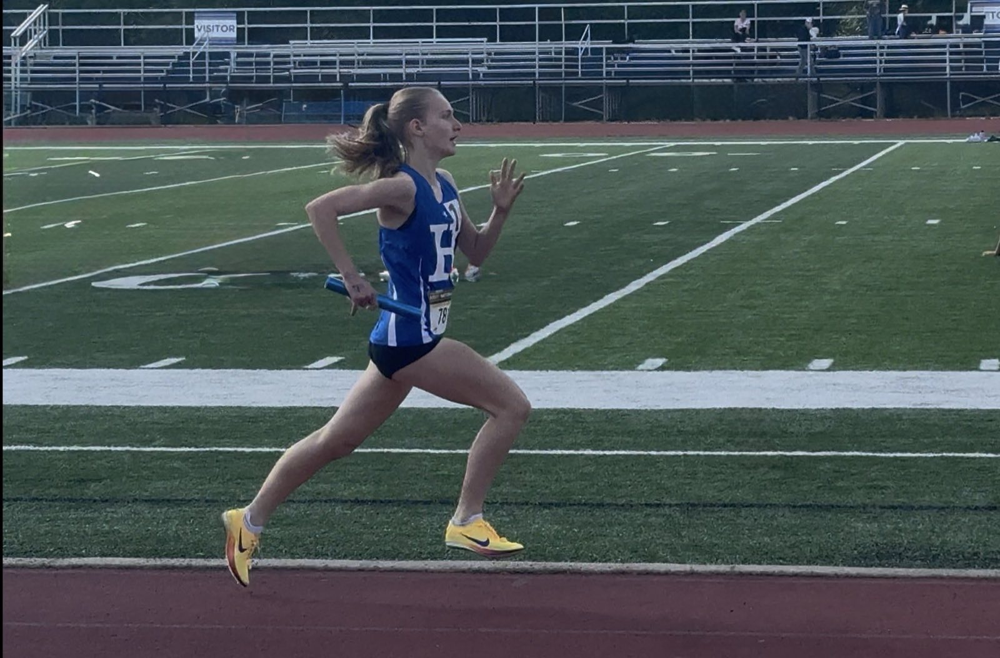
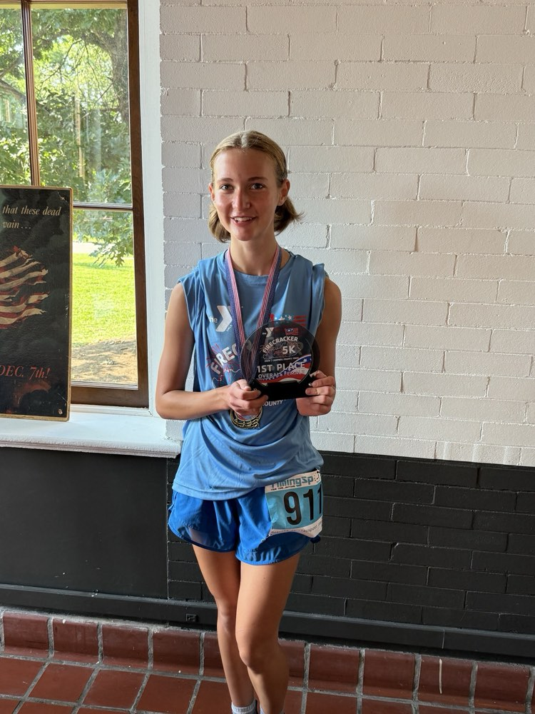

Isla Meyn
Distance Runner · Highlands High School · Fort Thomas, KY
All-State miler and two-time KHSAA state qualifier with a 5:21 mile and a 4.5 weighted GPA.
Printable Profile (PDF)Meet Isla
Isla is a rising junior at Highlands High School, where she excels both in the classroom and in competition, carrying a 4.509 weighted GPA with passing scores on four AP exams while running varsity cross country and track & field. On the track, she has been a key contributor to the Highlands program, running on the state-qualifying 4x800m relay in both her freshman and sophomore seasons and earning team MVP honors as a freshman.
In cross country, she has cut her personal best by nearly three and a half minutes over two seasons, an improvement that earned her a spot in MileSplit Kentucky's "Most Improved" rankings. Committed to reaching her full potential, she supplements her school training with programs at Tekulve Acceleration and D1 Training, and serves her community as a lifeguard and swim instructor at the YMCA.

Key Stats
5:21
1600m PR
19:46
5K PR
10
Podium Finishes
4.509
Weighted GPA